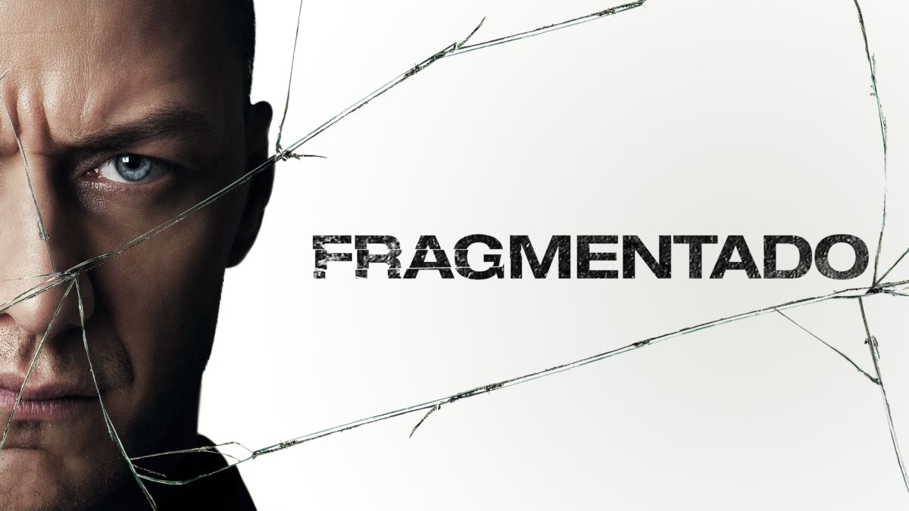

Lista de Películas Disponibles
-

Fragmentado
Categoria: Suspenso psicologico
Director: M. Night Shyamalan
Actores: James McAvoy y Anya Taylor-Joy
Clasificación: PG-13
Sinopsis: A pesar de que Kevin le ha demostrado a su psiquiatra de confianza que posee 23 personalidades diferentes, aún queda una misteriosa por emerger decidida a dominar a todas las demás. Obligado a raptar a tres chicas adolescentes encabezadas por la decidida y observadora Casey, Kevin lucha por sobrevivir contra todas sus personalidades y la gente que le rodea a medida que las paredes de sus compartimentos mentales se derrumban.
País: Estados Unidos
Año de Lanzamiento: 2017